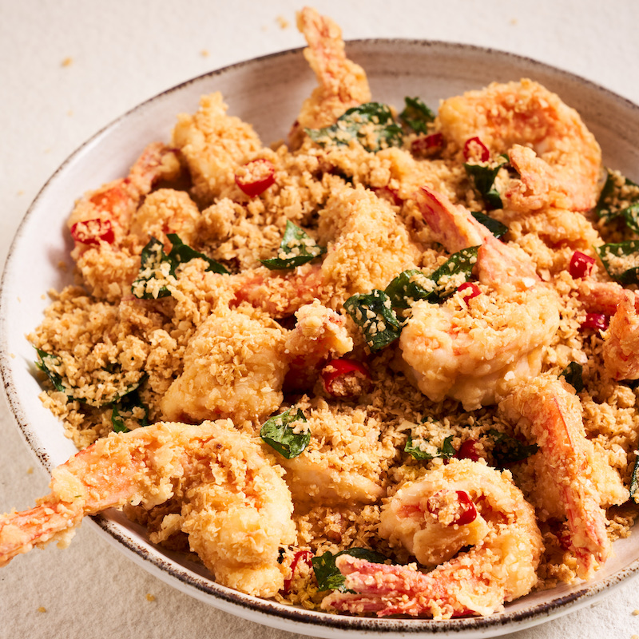

Singapore Cereal Prawns

Preparation time: 10mins
Ingredients
- 2 ½ tbsp plain (all-purpose) flour
- 2 ½ tbsp cornflour (cornstarch)
- 1 egg
- 1 cup original Nestum cereal
- 3 tsp caster (superfine) sugar
- 1 tbsp milk powder
- 1 chicken stock cube, crumbled
- vegetable oil, for shallow frying
- 600g (1lb 5oz) peeled king prawns, deveined
- 100g (3.5 oz) butter
- 6 red birdseye chillies, thinly sliced (or to taste)
- 8 sprigs curry leaves, leaves removed
- salt, to taste
- ground white pepper, to taste
Instructions
-
To set up your coating station, combine the flour and cornflour on a
small tray. In another shallow bowl, lightly whisk the egg. Combine the
Nestum cereal, sugar, milk powder and crumbled stock cube in another
bowl and set aside.
-
Line a tray with kitchen paper. Heat enough oil to shallow-fry (about
3cm/just over 1” depth) in a wok over medium-high heat. While it heats,
coat half the prawns in the egg, allowing excess to drain off, then dust
the prawns in the flour mixture, shaking off any excess. Once the oil is
hot, carefully add the prawns in a single layer, then cook for about 30
seconds on each side, or until the prawns are just firm and have turned
orange. Transfer the prawns to the lined tray to drain. Repeat the
process with the remaining prawns, egg and flour mixture. Pour the oil
out of the wok into a heatproof container, taking care as it is very
hot, then wipe the wok clean.
-
Return the wok to medium heat. Add the butter and cook until it sizzles,
then add the curry leaves and chilli and cook, tossing the wok, for
about 10 seconds to combine well. Add the prawns and toss them in the
butter for about 1 minute, or until they are coated. Add the cereal
mixture, then tossing constantly, cook for about 2 minutes or until the
prawns are well coated and the cereal is a little toasted – take care it
doesn’t burn. Season to taste with salt and white pepper, then serve
immediately.
Click here to home page